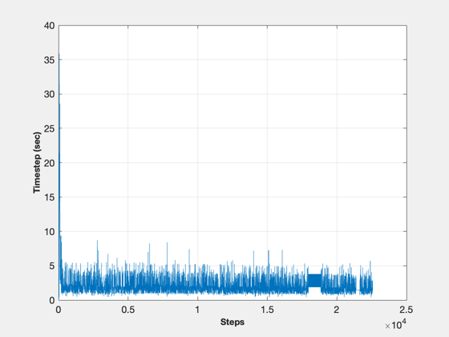
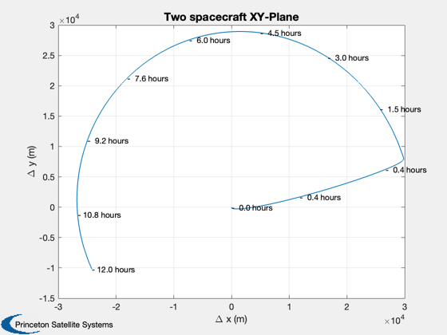
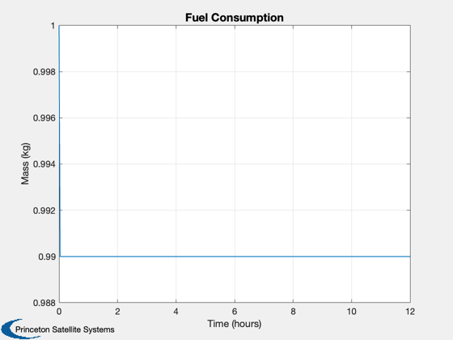

Demonstrate a 2 satellite CubeSat constellation.
This simulation includes drag, solar radiation pressure, sun and moon perturbations, and a thruster model. Uses ode113 and FOrbitMultiSpacecraft. The simulation takes a few minutes and there is no waitbar; be patient!
See also LabelLine, NewFig, Plot2D, TimeLabl, XLabelS, YLabelS, Skew, Date2JD, CubeSatPropulsion, CubeSatAero, CubeSatRadiationPressure, CubeSatFaces, FOrbitMultiSpacecraft, SolarFluxPrediction ------------------------------------------------------------------------
Contents
- Simulation duration
- Common fields
- Initial state vector
- Atmosphere data
- Make a second copy for the second spacecraft
- CubeSat face areas
- Attitude model
- Propulsion system for two CubeSats
- Add surface models for both CubeSats
- ode 113 parameters
- Numerically integrate the orbit
- Flip the matrices for plotting
- Plot the xy-plane
%------------------------------------------------------------------------ % Copyright (c) 2009 Princeton Satellite Systems, Inc. % All rights reserved. %------------------------------------------------------------------------ % Since version 8. % 2016.1: Update data structure format to match RHSCubeSat %------------------------------------------------------------------------ d = FOrbitMultiSpacecraft;
Simulation duration
%--------------------
days = 0.5;
tEnd = days*86400;
Common fields
%--------------- d.jD0 = Date2JD([2012 4 5 0 0 0]); d.planet = 'earth'; d.thrusterModel = @CubeSatPropulsion; d.aeroModel = @CubeSatAero; d.opticalModel = @CubeSatRadiationPressure; d.gravityModel = LoadGravityModel('load file','GemT1.geo');
Initial state vector
%---------------------- m0 = 1; % Initial mass, kg switch d.planet case 'moon' x0 = 3500; mu = Constant( 'mu moon' ); case 'earth' x0 = 6500; mu = Constant( 'mu earth' ); end x1 = x0; % Orbit radius x2 = x0 + 0.010; % Radius with an offset vY1 = VOrbit(x1,x1,mu); vY2 = VOrbit(x2,x2,mu); % State is [position;velocity;mass] % CubeSats are 1 kg %--------------------------------- r1 = [x1;0;0]; r2 = [x2;0;0]; v1 = [0;vY1;0]; v2 = [0;vY2;0]; x = [r1;v1;1;r2;v2;m0];
Atmosphere data
%----------------- % if you want J70, uncomment this. % [aP, f, fHat, fHat400] = SolarFluxPrediction( d.jD0, 'nominal' ); % atm = struct; % atm.aP = aP(1); % atm.f = f(1); % atm.fHat = fHat(1); % atm.fHat400 = fHat400(1); d.atm = []; % atm;
Make a second copy for the second spacecraft
%----------------------------------------------
d(2) = d;
CubeSat face areas
%------------------- [a,n,r] = CubeSatFaces( '1U', 1 ); cM = [0;0;0];
Attitude model
%--------------- att = struct(); att.type = 'lvlh'; att.qLVLHToBody = [1;0;0;0];
Propulsion system for two CubeSats
%----------------------------------- thrusterData = CubeSatPropulsion(); d(1).thrusterData = thrusterData; d(1).thrusterData.gas = 'nitrogen'; d(1).thrusterData.thrustCoeff = 0.05/690000; d(1).thrusterData.Isp = 68; % s d(1).thrusterData.temperature = 300; d(1).thrusterData.volumeTank = (4/3)*pi*0.02^3; d(1).thrusterData.rNozzle = [0.05;0;0]; d(1).thrusterData.uNozzle = [0;1;0]; d(1).thrusterData.qECIToBody = [1;0;0;0]; d(1).thrusterData.massDry = 0.99; d(1).thrusterData.pulsewidthFraction = 1.0; d(1).thrusterData.cM = cM; d(1).thrusterData.att.calc = false; d(2).thrusterData = d(1).thrusterData; d(2).thrusterData.pulsewidthFraction = 0;
Add surface models for both CubeSats
%--------------------------------------
surfData = CubeSatAero();
surfData = CubeSatRadiationPressure(surfData);
surfData.nFace = n;
surfData.rFace = r;
surfData.area = a;
surfData.cM = cM;
surfData.att = att;
surfData.rho = [1 1 1 1 1 1;zeros(2,6)];
d(1).surfData = surfData;
d(2).surfData = surfData;
ode 113 parameters
%------------------- opt = odeset( 'AbsTol', 1e-7, 'RelTol', 1e-4, 'outputfcn', @ODETimeDisplay );
Numerically integrate the orbit
%-------------------------------- disp('Simulating with ode113. This will take a few minutes.'); tic [t,x] = ode113( @FOrbitMultiSpacecraft, [0 tEnd], x, opt, d ); toc
Simulating with ode113. This will take a few minutes. Elapsed time is 23.043765 seconds.
Flip the matrices for plotting
%-------------------------------
delT = diff(t);
[t,tL] = TimeLabl( t');
x = x';
Plot the xy-plane
%------------------ dX = x([1;2],:) - x([8:9],:); NewFig('Simulation Timestep') plot(delT); YLabelS('Timestep (sec)') XLabelS('Steps') grid on Plot2D( dX(1,:)*1000, dX(2,:)*1000, '\Delta x (m)', '\Delta y (m)', 'Two spacecraft XY-Plane' ); LabelLine( dX*1000, t, 10, ['- %4.1f ' tL(7:end-1)] ) Plot2D(t,x(7,:),tL,'Mass (kg)','Fuel Consumption') %-------------------------------------- % PSS internal file version information %-------------------------------------- % $Date$ % $Id: c6275478a599fb4546b52a27cf07ef2207eb56aa $  